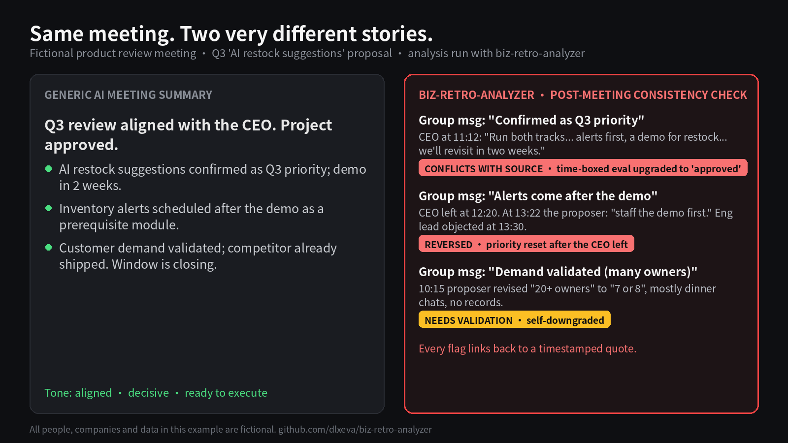

biz-retro-analyzer — an open-source Agent Skill for post-meeting audits
Your meeting notes say what was said. This tells you what nobody actually proved.
Same fictional Q3 product review. Left: a generic AI summary. Right: what the transcript actually supports.

People, company, and data in the demo are entirely fictional. Source files live in examples/product-review-fictional/en/. Chinese report: /demo/zh/.